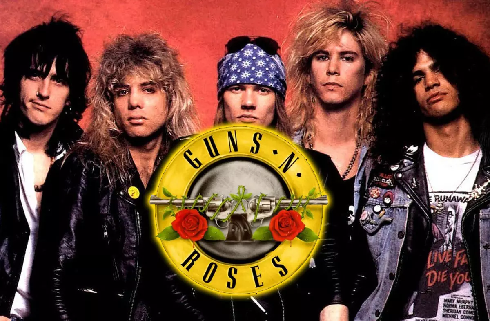

Guns and Roses
Guns N' Roses es una banda estadounidense de hard rock formada en
Hollywood en la zona de Sunset Strip alrededor de Santa Monica, en la
ciudad de Los Ángeles, California en 1985. El grupo fue fundado por el
vocalista Axl Rose y el guitarrista Izzy Stradlin.6Es una de las bandas
de rock más exitosas de todos los tiempos, habiendo vendido más de
ciento cincuenta millones de discos, es considerada ícono global de la
música y forma parte del prestigioso Salón de la Fama del Rock and Roll.
Asimismo, la banda es uno de los números artísticos con más galardones,
legado y repercusión mundial hasta la fecha. También Guns N' Roses es
considerada una de las bandas más influyentes de la historia debido a su
gran legado musical.
Miembros
- Axel Rose
- Slash
- Duff McKagan
- Richard Fortus
- DJ Ashba

Trabajos musicales
| Nombre |
año |
| Abbey Road |
1969 |
| The Beatles |
1968 |
| Let It Be |
1970 |
| Help |
1965 |
| Revolver |
1966 |
🔙 Volver al inicio
Página oficial de la banda